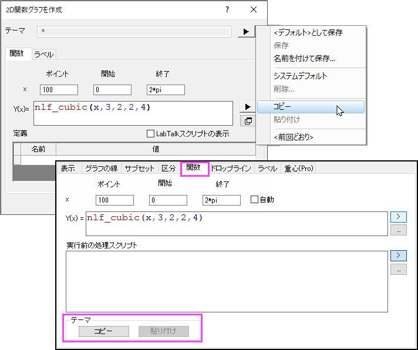
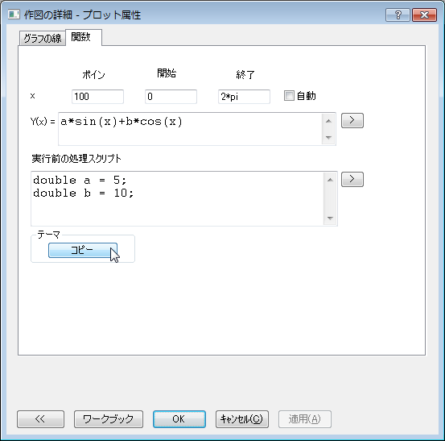
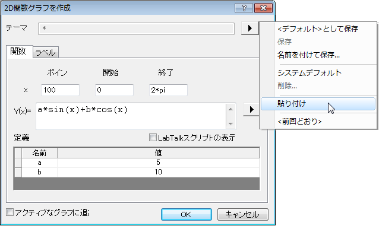

関数グラフでテーマを使用
FuncPlot-UseTheme
関数グラフの作成ダイアログまたは作図の詳細ダイアログの関数タブで関数を定義または編集する場合、テーマフライアウトメニューまたはボタンのコピー/貼り付けを使用して、関数グラフの作成ダイアログまたは作図の詳細ダイアログの関数タブで定義/カスタマイズを共有できます。

サンプル:
- 関数タブで関数を定義または変更した後、テーマグループのコピーボタンをクリックします。
- 
- メニューからファイル: 新規作成: 関数グラフを選択して、関数グラフ作成ダイアログを開きます。
- 開いたダイアログで、テーマの右側にある三角形のボタンをクリックし、コンテキストメニューから貼り付けを選択します。これにより、 作図の詳細ダイアログ の関数タブのすべての設定が貼り付けられます。
- 